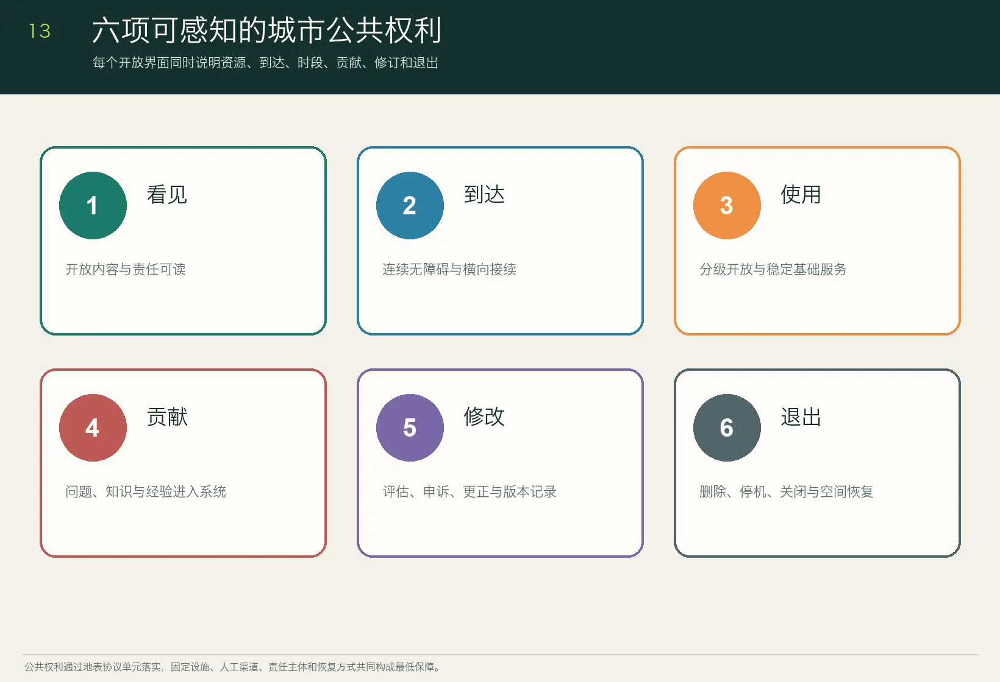

Overview map

Public transformation of knowledge-production space along the Jing-Zhang Railway




Task coverage: naming and identity, five-to-eight AI ecosystem cases, ten-plus scenario cards, three-plus industry testing scenarios, five-plus user personas, three-plus AI landmarks, cultural narrative and long-term operations.
Self-check status: deterministic validation, bilingual packaging, spatial review, visual packaging and professional evidence review.
Sources: official announcement, agent taskbook, OpenStreetMap/BBBike, and open-licence case materials.
Assumptions: provisional boundaries and low-confidence estimates; official data will trigger recalculation.